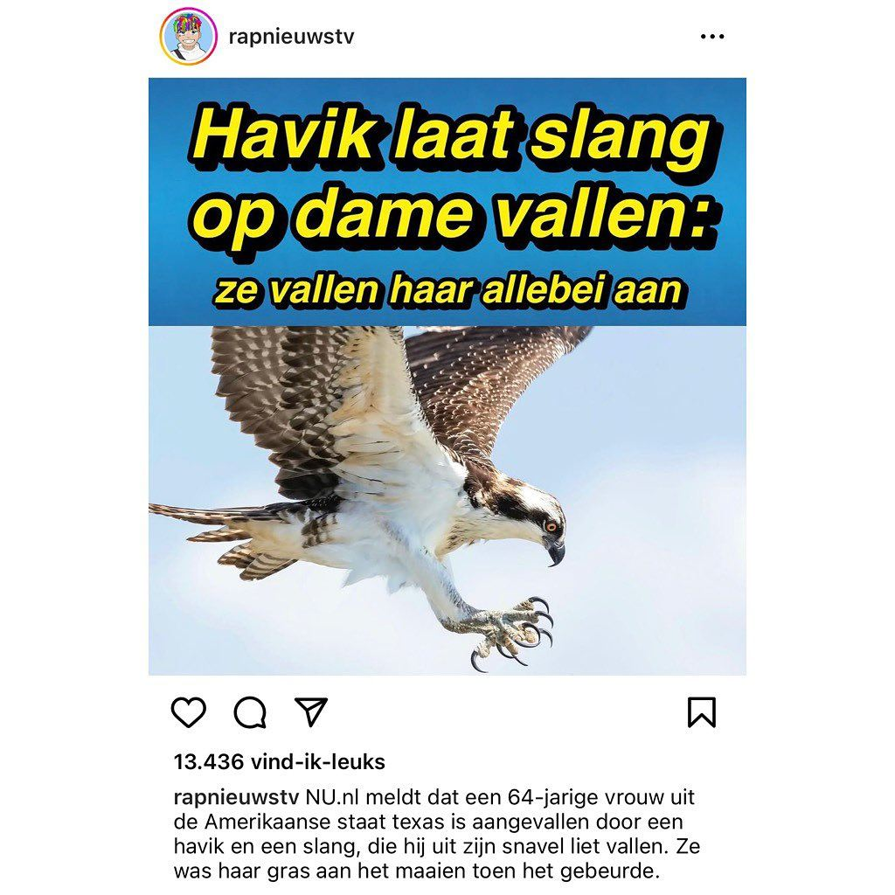

Visarend, geen havik
10 augustus 2023 · RapNieuws
- Op de foto
- Visarend
- Het ging over
- Havik

Voor de jeugd onder ons: ook @rapnieuwstv heeft het wel eens fout! Op de foto staat natuurlijk een Visarend.

Voor de jeugd onder ons: ook @rapnieuwstv heeft het wel eens fout! Op de foto staat natuurlijk een Visarend.